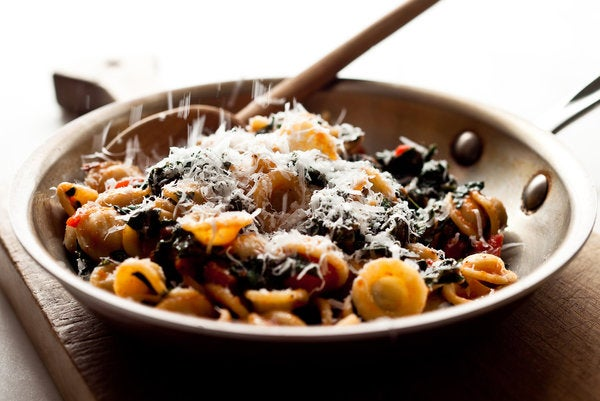

Desription
This is true to the Apulian tradition of serving chopped greens with orecchiette, those little ear-shaped pasta, though the greens might be different in Apulia and the combination doesn’t always include a tomato sauce.
Since I’ve always got tomato sauce in my freezer, it’s an easy dish to throw together. This winter version is made with canned tomatoes.
Ingredients
- 1 tablespoon extra virgin olive oil
- 2 garlic cloves, minced
- Pinch of red pepper flakes (optional)
- 1 (14-ounce) can tomatoes with juice, pulsed a few times in a food
processor or mini processor
- Pinch of sugar
- Salt to taste
- A few sprigs of fresh basil, if available
- ½ pound curly green kale or black kale, stemmed and washed thoroughly
- 12 ounces orecchiette
- 1 ounce (¼ cup) freshly grated Parmesan, pecorino Romano or a
combination (more to taste)
Steps
- Heat the oil over medium heat in a wide skillet or saucepan and add the garlic and red pepper flakes. As soon as the garlic begins to smell fragrant (30 seconds to 1 minute), add the tomatoes, sugar, salt and basil sprigs and bring to a simmer. Cook, stirring often, until the mixture is thick and fragrant, 15 to 20 minutes. Remove from the heat, taste and adjust seasoning.
- Bring a large pot of water to a boil, salt generously and add the kale. Blanch for 2 to 4 minutes, until tender but still bright green. Using a skimmer, transfer to a bowl of cold water. Do not drain the pot of water. Drain the kale and squeeze out excess water. Chop medium-fine and stir into the tomato sauce.
- Bring the pot of water back to a boil and add the pasta. Cook al dente, 10 to 11 minutes, or according to the cooking directions on the package. Drain and toss with the tomato and kale mixture right in the pan. Add the Parmesan, toss again and serve.